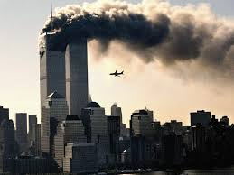

La guerra contra el terrorismo
11 de Septiembre de 2001: Dos aviones comerciales secuestrados impactaron las torres, causando incendios intensos que provocaron el colapso de ambas estructuras. Consecuencias: El atentado cambió la historia mundial, dando inicio a la "Guerra contra el Terrorismo" por parte de Estados Unidos e impactando severamente la economía global.
